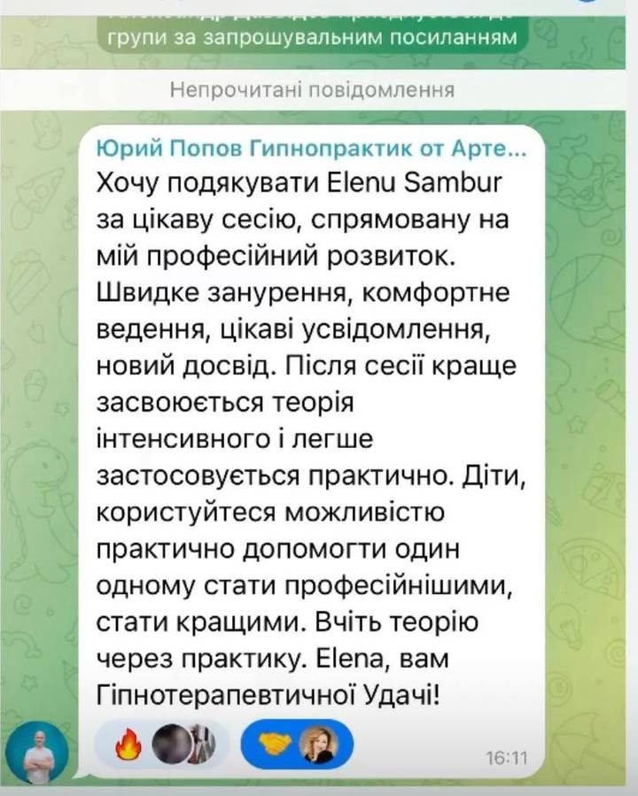

01
«Розбір»
Короткий контакт: запит, стан, очікування. Чи підходимо одне одному.
Гіпнокоучинг - вихід з емоційного вигорання
М’який вихід з вигорання - без тиску
«бути завжди на висоті».
Вигорання рідко кричить. Частіше воно шепоче: «ще трохи потерпи».
Крутіть колесо · клік — відмітити «так, це про мене»
Якщо хоч 2-3 пункти - про вас, ви не «слабкі». Ви - перевантажені. І з цим можна м’яко та ефективно працювати.
Ви відмітили кілька важливих сигналів. Це вже привід не тягнути все самостійно.
Записатися на РозбірПоєднуємо гіпнотичний стан (глибоке, безпечне розслаблення свідомості з одночасним фокусуванням уваги), коучингові питання і роботу з емоціями, тілом та внутрішніми сценаріями.
Ми не ламаємо вас. Ми знімаємо зайве навантаження, яке ви носили занадто довго.
З 2021
480+
людей пройшли шлях поруч зі мною
Кожен запит унікальний. Темп змін залежить від запиту, ресурсу та регулярності роботи.
Я не «рятую всіх». Я супроводжую тих, хто готовий повертатися до себе.
Тихий і зрозумілий шлях - від першого контакту до закріплення.
01
Короткий контакт: запит, стан, очікування. Чи підходимо одне одному.
02
Узгоджуємо фокус: вигорання, межі, стосунки, тривога, тіло.
03
Розслаблення → робота з образом / емоцією → інтеграція в життя.
04
Дихальні опори, короткі самогіпнотичні практики, увага до тіла.
05
З «режиму виживання» - у режим, у якому можна жити.
Ви зручно сідаєте.
Заплющуєте очі.
Я допомагаю уповільнити думки.
Ви слухаєте мій голос і розслабляєтесь.
Йдете за голосом - і чуєте найпершу відповідь зсередини, не з голови «як треба».
Гіпнокоуч. Працюю з емоційним вигоранням, гіпнотерапевтичними та психосоматичними підходами в практиці гіпнокоучингу.
З 2021 року проводжу людей через тиху трансформацію: від «тримаю все на собі» - до «я знову відчуваю себе». Моя робота - ГіпноКоучинг: гіпнотичні техніки + коучинговий супровід. Без сорому за втому, без тиску постійної продуктивності, з повагою до вашого темпу.
Почнімо з «Розбору»Усі ціни - за запитом. Головний крок: записатися на «Розбір».
Короткий розбір запиту. Чи потрібен гіпнокоучинг саме зараз - і чи комфортно нам разом.
Ціна за запитом
Записатися на РозбірСерія сесій під ваш запит: вигорання, межі, стосунки, тривога, тіло. Обсяг узгоджуємо на «Розборі».
Ціна за запитом
ЗапитатиАвторський курс, щоб підтримувати себе між сесіями або зробити м’який перший крок.
Ціна за запитом
Дізнатися про курсРеальні відгуки клієнтів - текст і відео.

Відеовідгук
Відеовідгук
Відеовідгук
Відеовідгук
Ні. У гіпнокоучингу ви залишаєтесь у контакті з собою. Це кероване глибоке розслаблення уваги, не втрата контролю.
Ви не стаєте маріонеткою. Можете говорити, мовчати, відкрити очі. Межі поваги - основа роботи.
Залежить від запиту. Як правило, обираємо 4+1 підсумкова або 8+1 підсумкова. За необхідності - до 12 сесій. На «Розборі» окреслимо реалістичний горизонт саме для вас.
Так. Тиша, навушники, безпечний простір вдома - звичний і ефективний формат.
Ні. Гіпнокоучинг не є медициною чи психіатрією. За потреби рекомендую звернутися до відповідного спеціаліста. Див. Відмову від відповідальності.
Натисніть «Записатися на Розбір» — підтвердіть перехід у Telegram @ElenaSambur. Відкриється чат із готовим текстом «Вітаю, хочу записатись на розбір». Я відповім і узгоджу наступний крок.
«Розбір» - тут можна сказати «мені важко» і зрозуміти як діяти, щоб вийти з цього стану. Натисніть кнопку — підтвердіть перехід у Telegram.
Гіпнокоучинг не є медичною чи психіатричною допомогою. Деталі
Ви переходите в Telegram до Олени Самбур @ElenaSambur. Відкриється чат — можна одразу надіслати готове повідомлення про запис на «Розбір».